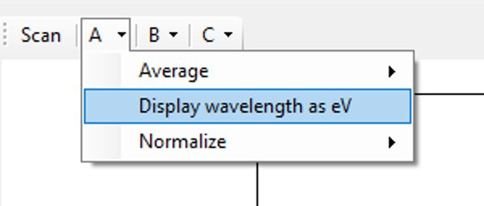

REDPL SOFTWARE
I created RedPL software to streamline data acquisition from a Thorlabs spectrometer. The software includes a user-friendly interface, reliable error handling, and a reporting feature that exports normalized spectral data for real-time analysis.
Special shoutout to Mike Hu, Guofeng Yin for their mentorship and help!
WHAT:
Internship Project @ First Solar
WHEN:
Summer 2024
System Theory
The Red PL tool utilizes photoluminescence (PL) spectrometry to determine the bandgap and assess the quality of a solar cell coupon. In this process, a laser illuminates the coupon, exciting electrons from the valence band, where they are at lower energy, to the conduction band, where they can move freely and conduct current. The bandgap (Eg) is defined as the energy difference between the highest energy level of the valence band and the lowest energy level of the conduction band. As the excited electrons relax back to the valence band, they emit photons with energies corresponding to the material's bandgap.
How Data Are Interpreted​
The emitted light is collected by the spectrometer to produce a spectrum, which displays the intensity of the light as a function of energy (eV) or wavelength (nm). The peak of the photoluminescence (PL) emission corresponds to the material's bandgap energy. A strong, sharp, and well-defined PL peak signifies a high-quality material with minimal defects. Additionally, a narrower full width at half maximum (FWHM) indicates uniformity and a well-defined bandgap energy level, which are characteristic of higher material quality.
Hardware Setup of the Red PL System​

Figure 1: Hardware setup of the Red PL system, featuring a Thorlabs spectrometer, a laser, and a solar cell coupon.
Figure 2: Close-up of the Thorlabs spectrometer, which collects the emitted light from the solar cell coupon.
Figure 3: Close-up of the laser, which excites electrons in the solar cell coupon to emit light.
Thorlab (Vendor) Generic Software
The ThorSpectra program provided by the vendor was previously used to obtain raw scan data. However, the software has several limitations: it lacks a data fitting feature to display the peak and full width at half maximum (FWHM), does not include a data uploading feature, and offers no calibration functionality.
New Software Requirements​
The initial software is designed to overcome the limitations of the vendor's software by incorporating the following features:
- Data Acquisition: Similar to ThorSpectra, it enables the collection of raw intensity versus wavelength data, which is presented both graphically and in a CSV file format.
- Data Processing: This includes new functionalities such as calibrating intensity data using a premade CSV calibration file, performing Gaussian fitting on the curve, and determining the peak and full width at half maximum (FWHM), which are displayed next to the graph.
- Data Reporting: A new feature that allows the software to automatically upload all data, including input parameters and fitted results, to the SQL database upon clicking the save button.
IMPLEMENTATION
New Software Design (Technology Stack)
Initial Landing Page​

Input Parameters
-
OD Filter
- 0, 1, 2, No Filter Options
- Dropdown menu
-
Laser Power
- Operator manually input
- Type: Double
-
Coupon ID
- Scanner automatically inputs coupon ID
-
Cell ID
- Operator manually input
- Type: Int
-
Stress Time
- Operator manually input
- Type: Int
-
Integration Time (Seconds)
- Numeric Up/Down Button
-
Load Calibration
- Loads a CSV file with calibration data
-
RDB Number
- Type: String
Error Checking and Handling​
If any parameters are missing, a pop-up message will show up notifying the operator which parameters are missing
Specific error handing for Cell ID and Stress Time​:
More than 1 Scan​​
Every time a successful scan is completed, that data will be saved alphabetically under one of these dropdown buttons on the tool bar
- First scan = A
- Second scan = B​
- Third scan = C
The buttons will auto-generate once the operator scans more than 3 times to include the next letter “D” and so on.
Plotting Averages by 10, 20, 50​
The tool will automatically plot the average of the last 10, 20, and 50 scans. The operator can select which average they would like to view by clicking on the corresponding button.
Change Wavelength (X-Axis) Units from nm to eV​
The operator can change the units of the x-axis from nm to eV by clicking on the corresponding button.
Normalize Graph Data​
The operator can normalize the graph data by clicking on the corresponding button.
Saving the Data as a CSV File​​
Operator can input any additional notes for this scan (Notes are optional)
When the Save button is clicked, there will be a pop up that automatically saves the file titled in the following convention:​ RDB#_SS_OD#_IntegrationTime​
Saved CSV File​
When the Save button is clicked, the data will be saved in the following format:
Header Row:
- Parameters entered by operator: RDB, OD#, Laser Power, Integration Time, CouponID, CellID, StressTime​
- Calculated Data: Peak Position (wavelength at max intensity), Peak Intensity, FWHM, Notes​
ScanData = raw data​
CalibratedData = ScanData x CalibrationFactor​
FittedData = Gaussian-fitted data
Loading Data to Database​​
When operator clicks to save their data as a CSV file, the software simultaneously uploads the data into the CTC database
If there any exceptions when uploading data to database, it is logged as an event to a log file
Logging has rolling interval of 1 day​
A new folder will be generated every month and a new file will be made everyday​
SQL Database​
SQL database schema for the RedPL software